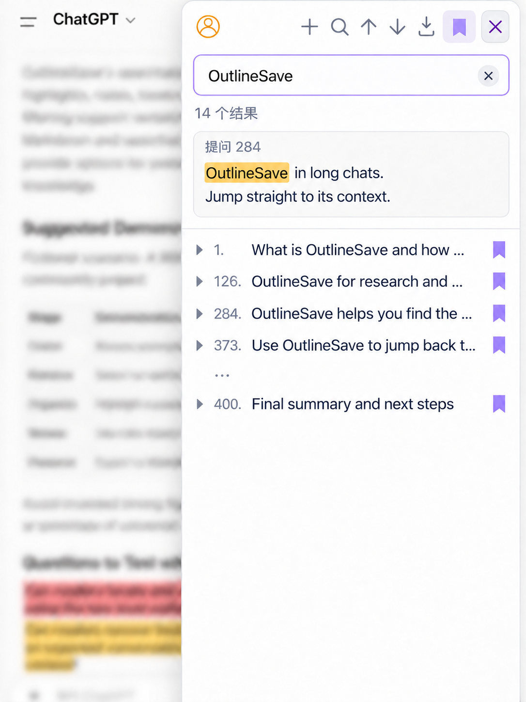
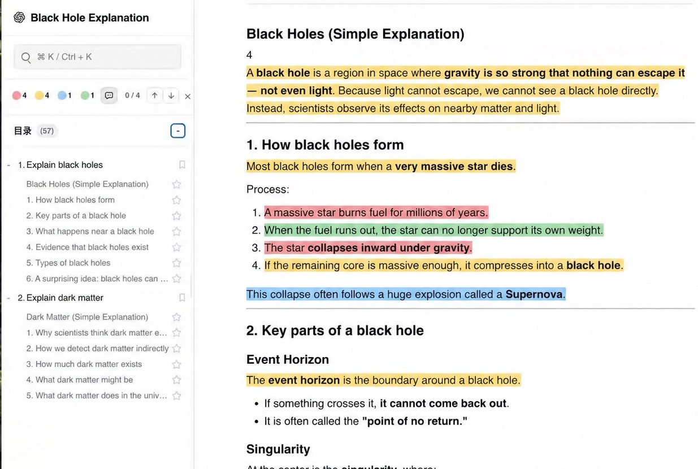

Complete two-level outline
Organize questions and AI answer headings into a two-level outline. In chats with 400+ questions, build the outline progressively, search by keyword, and jump to a match.
OutlineSave
Search your conversation outline to find what matters, fast.
The complete outline is visible and searchable. In each ChatGPT chat, navigation to the first 100 top-level entries and already-loaded entries is free.
For ChatGPT, Gemini, Claude & DeepSeek · Local-first

Organize questions and AI answer headings into a two-level outline. In chats with 400+ questions, build the outline progressively, search by keyword, and jump to a match.
Highlight key passages in four colors, underline text, add notes, and bookmark important content. Filter your marks to revisit what matters.
Copy selected content as Markdown in one click, preserving inline and block LaTeX formulas for notes, documents, and research.
Export full conversations or bookmarked content to Markdown or JSON without a quota. Manually back up Markdown to your own Google Drive, or back up and restore your ChatGPT marks.
Save long AI conversations as standalone HTML files you can read without an internet connection.
Keep the outline, full-text search, highlights, notes, code, and math formulas, so your exported chats remain easy to navigate and review.
Save ChatGPT conversations directly as PDFs with searchable text and outline bookmarks, ready to print or share.

Each ChatGPT chat has its own allowance. The first 100 top-level entries and entries whose conversation content has already loaded are free to navigate. Secondary headings follow their parent entry. Later entries that still need loading require Pro or an active trial. All outline entries remain visible and searchable.
Switch between fixed and floating modes. Collapse, hide, or reposition the sidebar when you want more room to read.
Your AI conversations are primarily processed locally in your browser. Google Drive backups are optional and initiated manually.
* Features and outline loading methods can vary across AI platforms.
Free includes search across all outline entries, bookmarks and annotations, with 3 shared HTML/PDF exports per week. Credits refill each Monday at 00:00 UTC and do not roll over. Markdown/JSON exports are unlimited. “Continue with outline navigation” uses the same free allowance as clicking the directory. Pro unlocks all directory navigation and unlimited HTML/PDF exports.